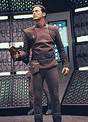
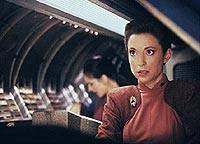
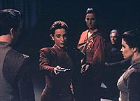
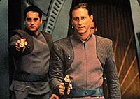
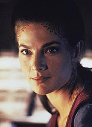

|
Deep
Space Nine
Temporada 2

Anlise do episdio por
Luiz
Castanheira


|
MANCHETE
DO EPISDIO Episdio anterior | Prximo episdio
Data Estelar:
desconhecida. Observando o
desespero no rosto de vrias pessoas querendo deixar a estao
a todo custo, Quark diz a Rom que planeja tirar vantagem da situao
e ganhar algum Latinum com ela. Jake e Nog se encontram no
Promenade e ficam ambos desapontados por saber que esto com
partidas em diferentes Exploradores. Eles prometem que iro se
encontrar novamente em breve e se abraam como irmos. Keiko est
furiosa por que O'Brien se candidatou para ficar em DS9.
Mas seus argumentos no so suficientes para mudar a atitude de
Miles. Finalmente, ela leva Molly para o interior do prximo
transporte.  Odo prende Quark
por este estar "vendendo lugares nos transportes".
Quando Sisko pergunta onde Quark arrumou lugares extras, este
responde que andou "molhando a mo" de alguns
passageiros de direito. Bashir chama no comunicador dizendo que a
demanda por evacuao simplesmente "explodiu". Quark
diz que ele "talvez tenha exagerado um pouco" no nmero
de assentos disponveis. Sisko (furioso) parte com Li Nalas para
as Docas. Quark se vira pra
Odo. "Odo, eu sei que voc ir sentir a minha falta. Voc
sabe que ir. Ento diga". Ao que, para surpresa de Quark,
Odo responde "Sentirei falta das falcatruas, dos conchavos,
dos maus modos ... ", "Odo...", interrompe Quark,
"...cuide-se bem". Chegando s
docas, aps uma tentativa frustrada por parte de Sisko, Li
Nalas quem consegue conter a multido (na maioria Bajoriana). A
partir da, a evacuao prossegue de maneira bastante ordenada.
Ben finalmente se despede de Jake com um abrao e uma carta para
ser aberta "daqui a algum tempo". Assim que a
escotilha do Explorador se fecha, Quark chega s docas,
carregando uma pesada mala (obviamente carregada de Latinum). Ele
afirma que Rom est no Rio Grande com o seu bilhete. Bashir diz
que a nave estava cheia e que Rom embarcou na companhia de uma
garota Dabo. "Parece que ele vendeu o seu lugar", diz
Sisko indo embora da rea com Bashir, deixando Quark e suas lamrias
para trs.  Dax e Kira se
movem em uma caverna coberta de teias de grandes "aranhas
Bajorianas", que Kira chama de palukoos e, para desgosto de
Dax, informa que elas serviam de "rao de emergncia"
nos tempos da resistncia. Elas encontram uma antiga e minscula
nave espacial e Dax comea a trabalhar em seus motores. Krim e Day chegam
ao OPS (Centro de Operaes de DS9) e descobrem que a
rede interna de segurana foi sabotada. Day informa o seu
"sucesso" a Jaro pelo subespao. Krim sugere cautela,
pois ele ainda tem dvidas se de fato o inimigo se foi. Jaro diz
que se eles estiverem ainda ali, ele quer Li Nalas capturado vivo.
"Morto, ele um mrtir. Vivo, ele sela a nossa vitria",
diz Jaro. Depois de terminar a transmisso Jaro diz a Winn, com
ele em Bajor, que ele oferecer qualquer coisa a Li por sua
cooperao. Diz tambm que assim que tiver sua posse
oficializada ir guiar a assemblia dos Vedeks para torn-la
Kai. Dax conserta os
motores da nave, mas continua um tanto incerta sobre voar
"naquela coisa", porm Kira est em seu elemento agora
e decola com a velha nave. Day envia grupos
de busca para procurar Sisko e cia., sob os protestos de Krim, que
acha mais importante reativar os sistemas principais da estao.
O grupo de Sisko faz piada sobre as raes de emergncia
providenciadas por O'Brien. Odo, disfarado de parede, informa
sobre os grupos de busca de Krim. Sisko envia a unidade de Bashir
(que deixa Quark para trs) para interceptar um grupo de busca no
hangar de carga e Bashir e cia. acabam fazendo os primeiros
prisioneiros. Kira e Dax entram
em rbita de Bajor. Enquanto Kira est procurando um lugar para
pousar elas so atacadas por um comit de boas-vindas de Jaro.
Kira decide entrar na atmosfera, onde eles no podero usar os
seus motores de impulso. O'Brien e Li esto
no escritrio de segurana, promovendo mais um ato de sabotagem,
quando so pegos sob fogo pesado. Sisko e os outros vo a seu
auxlio. Com a ajuda de uma bomba de fumaa e da providencial
transformao de Odo em um cabo de ao, O'Brien e Li conseguem
escapar. Na atmosfera,
Kira e Dax, mesmo largamente em desvantagem numrica, conseguem
derrubar um dos agressores, mas acabam sendo atingidas seriamente
e caem na floresta. Um grupo de busca
liderado por Day acaba ficando preso em uma armadilha de Sisko,
montada em uma holosute no Quark's. Sisko fala pelo intercom
sobre o envolvimento Cardassiano, o que Day prontamente rotula
como sendo uma "mentira da Federao". Sisko diz ainda
que prova irrefutvel est a caminho da Cmara dos Ministros em
Bajor e, chegando l, o golpe estar terminado. Sisko transporta
Day de volta ao OPS, porm Day no repassa a informao para
Krim. Os sensores da Estao esto finalmente de novo em operao.
Mas como eles ainda assim no conseguem detectar as foras de
Sisko, Krim deduz que eles esto se escondendo nos conduites
revestidos de duranium, uma blindagem efetiva contra os sensores. Kira est muito
ferida, mas Dax se recusa em prosseguir sozinha com a evidncia.
Kira diz que Dax est sendo tola, ao que Dax responde que no
bonito falar com os mais velhos desta forma. Kira perde os sentido
enquanto Dax tenta escond-las de uma patrulha passando ao largo. Odo avisa Siko
que as foras de Krim esto para encher os conduites com gs
anesthezine. Sisko nada sabe sobre o progresso de Kira e Dax, mas
acredita que ainda tenha uma cartada para jogar com Krim: Li
Nalas. - Eu morreria
pelo meu povo, mas..." - Com certeza voc
morreria. Morrer livra voc do fardo de ser uma lenda viva. A
questo : voc est disposto a viver pelo seu povo? Viver o
papel que eles querem que voc represente. isto que eles
precisam de voc agora.  Bashir, que
estava tentando convencer Quark a deixar o seu Latinum para trs,
assegura a Sisko que ele e seu grupo vo proporcionar uma
"ruidosa resistncia" at que eles se rendam as foras
de assalto Bajorianas. No OPS chega a notcia de um ataque s
foras Bajorianas em um setor da estao, Day envia todas as
unidades de busca para o local. Pouco depois chega a notcia de
que um grupo leal a Sisko se rendeu. Foi tudo uma distrao.
Quando Krim volta ao escritrio do comandante, Sisko&Cia o
dominam. Li Nalas diz "Meu nome Li Nalas. Talvez j tenha
ouvido falar de mim." Kira, ladeada por
Bareil e Dax, interrompe uma sesso da cmara de Ministros
Bajoriana. Quando Jaro ordena que ela seja presa, Kira mostra o
PADD e explica a sua natureza para a audincia. Winn,
estrategicamente se afasta de Jaro e se aproxima de Kira. Winn
recomenda uma investigao completa e Jaro diz no ter nada a
temer e ir cooperar em todos os sentidos na apurao da
verdade, mas, na realidade totalmente derrotado, ele adia a sesso
e deixa o recinto. Os ministros comeam a clamar para falar com
Kira, como previsto em sua viso. o final do golpe. Day retorna com
os seus prisioneiros e recebido por um Krim furioso por Day ter
retido informaes sobre o envolvimento Cardassiano. Krim recebe
notcia de que a cmara de Ministros est em recesso examinando
a evidncia apresentada por Kira e, j na expectativa de que ter
que renunciar a patente, devolve oficialmente o comando de DS9
para a Federao na pessoa de Bem Sisko. Mas Day no quer
deixar que a coisa acabe assim, ele toma uma arma e atira em
Sisko, Li Nalas se interpe e recebe a carga mortal. Odo desarma Day
enquanto Sisko e Bashir tentam socorrer Li. intil, Li morre,
sendo suas ultimas palavras, "Livre do fardo ...
afinal". No Quark's esto
Sisko, Kira e O'Brien. Kira est muito triste pela perda de Li.
Sisko diz "Existem heris hoje, por todo Bajor, Major. Eu
estou sentado com uma delas neste exato momento." Kira diz
que no se sente bem para celebrar, pede licena e se retira. Quando O'Brien
questiona a forma como Kira idolatra Li Nalas, um homem que ele
conheceu em combate, nada parecido com as lendas que cercam o seu
nome, Sisko interrompe e diz: "Chefe, Li Nalas foi o heri
da resistncia Bajoriana. Ele realizou atos extraordinrios de
coragem pelo seu povo e morreu pela liberdade deste mesmo povo.
Esta a forma que os livros de histria Bajoriana iro se
lembrar dele e como EU irei me lembrar dele." Ento os exploradores comeam a voltar a estao, e os dois seguem para as docas a fim de recepcionar as suas respectivas famlias.
Enfocando os elementos e mesmo os personagens errados, deixando inmeros temas levantados nas duas primeiras partes em aberto e mal realizados e sendo a maior parte do tempo o conjunto de duas "tramas de tarefa" correndo paralelamente, "The Siege" uma grande decepo se comparado expectativa produzida pelas duas primeiras partes.  Vejamos ento: O Governo Provisrio Bajoriano se manteve. A aliana de Winn e Jaro se desfez antes de se materializar, Jaro cai em desgraa, o "Crculo" tem um colapso, os Cardassianos NO retornam, a Federao retoma a sua posio em DS9 e Li Nalas morre. ( difcil pedir por algo mais PERFEITO que isto, no ?) Antes de chegar na raiz dos problemas do episdio vamos esclarecer onde eles no existem. Eu gosto muito de todas as cenas desde o comeo do episdio at o momento em que as foras de Krim pem os ps na estao, bem como as cenas aps a morte de Li Nalas. Os problemas se concentram entre a chegada de Krim a estao e a morte de Li Nalas. A histria paralela envolvendo Kira e Dax tentando entregar o PADD na cmara dos Ministros extremamente bem executada e com inegvel valor de entretenimento. Ainda que fique algo no campo do "mas que coincidncia", pois justo os monges da ordem de Bareil encontram as duas, no tenho maiores problemas com este lado da histria. Por outro lado temos grandes problemas na trama envolvendo a estao. Krim e Day so muito mal escritos e atuados, concluindo a sua participao de uma forma totalmente indefinida no sendo base para discusso de nenhum tema relevante. Levando em considerao que Winn e Jaro praticamente no so usados no episdio este ponto chega a irritar. No descobrimos nada sobre o funcionamento do Governo provisrio, do "Crculo" e do sistema religioso Bajoriano. Jaro simplesmente some, junto com o "Crculo", como se por um passe de mgica, sem deixar rastros em lugar nenhum.  As cenas da resistncia de Sisko na estao at que so bem executadas mas acrescentam pouco dramaticamente, exceto a cena em que Sisko consegue convencer Li a enfrentar Krim. (Algo definitivamente desinteressante a piada cansada de Quark arrastando o seu Latinum, que exige pacincia do telespectador.) A morte de Li Nalas (a despeito de quaisquer discusses logsticas quanto a presenas futuras de Richard Beymer, pensamento que se aplica tambm a Frank Langella) foi um erro, admitido ao longo da srie, quando os Produtores introduziram o personagem Shakaar com passado semelhante e para ocupar essencialmente o mesmo papel. A direo de Winrich Kolbe novamente irretocvel, infelizmente a qualidade do roteiro no do nvel da de "The Homecoming", (segunda temporada de DS9). Fletcher, Langella e Anglim praticamente no aparecem. Beymer continua muito bem com o material recebido. Macht est medocre e Weber, HORRVEL. O elenco regular trabalha bem e o destaque vai para a "dupla dinmica" Farrell & Visitor. Os elementos da viso de Kira se resolvem de uma forma belssima. A sede de poder de Jaro, Dax no Monastrio, Bareil as escoltando at a cmara do Ministros e estes todos clamando por falar com ela. Os elementos envolvendo a aproximao amorosa entre Kira e Bareil e a eleio do prximo Kai vo ser resolvidos nos episdios "Shadowplay" e principalmente "The Collaborator" desta mesma segunda temporada. O dilogo final em que Sisko e O'Brien falam sobre a lenda de Li Nalas memorvel e toca novamente em um dos temas recorrentes na srie, a f em mitos e lendas. Uma outra nota negativa que todos os confrontos na estao so convenientemente feitos sem derramamento de sangue e um Bajoriano que acaba matando Li (havia potencial para continuao sobre este tpico tambm). Seguindo na linha do que poderia ter sido, j pensaram em Bareil & Li versus Winn & Jaro? "The Siege", julgado pelo que ele , tem suficiente valor de entretenimento para receber uma boa recomendao aqui, mas extremamente decepcionante, se julgado pelo que poderia ter sido. A trilogia se encerra em um tom apressado (havia material fcil para uns seis episdios aqui e no somente trs), sem utilizar todo o potencial da premissa apresentada inicialmente.
Escrito por Michael
Piller Elenco: Avery Brooks como
Benjamin Lafayette Sisko Elenco convidado: |